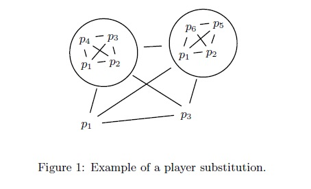
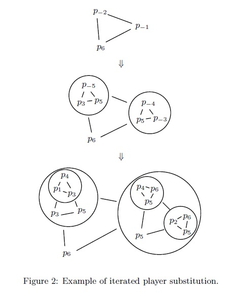

Multiparty Computation

Overview
Introduction
Paper Title is...
Goals and Results
Some goals that they had.
Don't forget some results, too!
Assumptions
Definitions
Definition 1 -A definition
Theorems
Some general definitions used by several theorems
Theorem 1A theorem
Protocols
Some Protocol Defined
- Number of parties:
- Function(s):
- Privacy constraints:
- Cheating:
- Bits exchanged:
- Subprotocols:
- Runtime:
- Assumptions:
- Implementations:
- Notes:
Further Reading
Referencing This Paper
To cite this paper, simply copy and paste the below into your citation:
A reference for this paper
Annotated Paper (extended abstract)
Abstract
The classical results in unconditional multiparty computation among a set of \(n\) players state that less than \(n/2\) passive or less than \(n/3\) active adversaries can be tolerated; assuming a broadcast channel the threshold for active adversaries is \(n/2\). Strictly generalizing these results we specify the set of misbehaving players as an arbitrary set of subsets of the player set. We prove the necessary and sufficient conditions for the existence of secure multiparty protocols in terms of the potentially misbehaving player sets.
For every function there exists a protocol secure against a set of potential passive collusions if and only if no two of these collusions add up to the full player set. The same condition applies for active adversaries when assuming a broadcast channel. Without broadcast channels for every function there exists a protocol secure against a set of potential active adverse player sets if and only if no three of these sets add up to the full player set.
The complexities of the protocols not using a broadcast channel are polynomial, that of the protocol with broadcast is only slightly higher.
1. Introduction
1.1. Secure Multiparty Computation
Consider a set of payers who do not trust each other. Nevertheless they want t compute some agreed function of their inputs in a secure way. Security here means maintaining correctness of the output while keeping the players' inputs private. This is the well-known secure multiparty computation problem (e.g. [?],[?]). For an excellent overview see [?][?][?].
There exists a rich literature on the subject. These approaches can be classified according to a number of criteria that are briefly discussed below. Some papers (e.g. [?][?][?][?][?][?]) describe protocol constructors which for any function generate a protocol for securely computing it, while other approaches are tailored to a particular function like voting (e.g. [?]), auctioning[?], or collective signing[?]. The major reason for considering special functions is the potential gain of efficiency compared to a general solution. The communication models differ with respect to whether or not broadcast channels and/or secure communication channels are available, and whether the communication channels are synchronous or asynchronous. Adversaries are classified according to their computational resources (limited, hence cryptographic security, e.g. [?][?], or unlimited, hence unconditional or information theoretic security, e.g. [?][?][?], and according to whether they cheat actively or passively. A set of active adverse players is called an adversary, a set of passive cheaters is called a (passive) collusion.
In the information-theoretic model one can distinguish between protocols with small (e.g. [?][?]) or with zero failure probability (e.g. [?]). We refer to the latter as perfect multiparty computation. The types of tolerable adversaries have recently been generalized in a number of directions (adaptive adversaries[?] and uncoercibility[?]), and some authors have investigated multiparty computation for various minimality and complexity criteria[?][?][?][?][?][?].
All the previous results in the literature specify the sets of potential adverse players (passive or active) that can be tolerated by their cardinality, i.e. by a threshold. In a setting with perfect security, Ben-Or, Goldwasser, and Widgerson[?] proved that with \(n\) players all passive collusions with less than \(n/2\) members or, alternatively, all active adversaries with less that \(n/3\) members can be tolerated. We refer to these two models as the passive and the adtive model. The same results were obtained independently by Chaum, Crépeau, and Damgård[?] in an unconditional model with exponentially small error probability. Rabin and Ben-Or[?] proved that, in an unconditional (but not perfect) model with a broadcast channel, active adversaries with less than \(n/2\) members can be tolerated. This model is referred to as the active model with broadcast.
1.2. Contributions of this Paper
This paper is concerned with protocol constructors for arbitrary functions that provide unconditional security against passive or active adversaries with unbounded computing power. The security of the protocols in the passive and active models is perfect, the protocols in the active model with broadcast offer unconditional security with exponentially small error probability.
The main goal of this paper is to generalize in all three stated models the threshold-type results to general structures of adverse players. An adversary structure is a monotone set of subsets of players and corresponds to the notion of an access structure in the area of secret sharing (or, more precisely, the complement of it).
Our main contributions can be summarized as follows. First, we provide a framework for player substitution and derive the corresponding tolerated adversary structures (Theorems 1 and 2). Second, we give the exact characterization of which collusion structures and which adversary structures can be tolerated:
- As a strict generalization of the threshold-type results of [?][?], we prove that in the passive model, perfect multiparty computation for any function is possible if and only if no two potential passive collusions add up to the full player set.
- As a strict generalization of the threshold-type result of [?] we prove that in the active model with broadcast, unconditional multiparty computation for any function is possible if and only if no two potential active adversaries add up to the full player set.
Third, our results can also be seen in the context of verifiable secret sharing: we implicitly provide such schemes for general access structures, thereby solving some open problems stated at the end of Chapter 3 in Gennaro's Ph.D. thesis[?].
The emphasis of this paper is on the existence of protocols. In addition, the presented protocols for the passive and the active model have time and communication complexities polynomial in the size of the description of the adversary structures.1. The protocols for the active model with broadcast have complexities slightly greater than polynomial. Due to the exponential size of the description of a general adversary strucutre, our protocols are in general not (and cannot be) polynomial in the number of players. Note that there exist polynomial (in the number of players) protocols for specific adversary structures (e.g. for threshold structures[?] and certain other types of structures).
1.3. Motivation and Outline
All protocols in the literature provide only security of a threshold type. However, in a more general scenario the set of tolerated dishonest players is not specified by a threshold. As a first example, consider a set of five players, \(P=\{p_1,p_2,p_3,p_4,p_5\}\), where the players of one of the sets \(\{p_1,p_2,p_3\},\,\{p_1,p_2,p_4\},\,\{p_1,p_5\},\,\{p_2,p_4\},\text{ or }\{p_3,p_4\}\) potentially collude to try to obtain some information about the other players' inputs. Can the five players compute an agreed function privately in the sense that none of the stated potential collusions obtains any information about the other players' inputs beyond what is provided by the function output? For this particular case, they can. By assigning an integer weight \(w_i\) to each player \(p_i\) and having every player act for \(w_i\) players in the threshold-type protocol of [?] they can tolerate the stated collusions. In the passive model, privacy is guaranteed if and only if $$\sum\limits_{\text{dishonest}\,p_i}w_i\,\lt\,\frac12\sum\limits_{p_i\in P}w_i.$$ In the active model, security is guaranteed if and only if $$\sum\limits_{\text{dishonest}\,p_i}w_i\,\lt\,\frac13\sum\limits_{p_i\in P}w_i.$$
In the above example, \(p_1\) and \(p_2\) are assigned the weights \(w_1=w_2=1,\,p_3\) and \(p_4\) are assigned the weights \(w_3=w_4=2\) and \(p_5\) is assigned the weight \(w_5=3\). This results in a total weight of 9. The multiparty protocols of [?] among 9 players for the passive model tolerates all collusions with at most 4 members. One can easily verify that all states subsets have total weight at most 4.
This simple examples shows that for some particular sets of potential collusions it is possible to construct a protocol that tolerates them. However, such generalized threshold-type results are not sufficient for capturing general scenarios of mutual trust and distrust. For example, assume that a number of spy-masters wish to compute a list of double agents[?], i.e. agents working for at least two different countries, without revealing the agent lists to each other. Because countries are often either allied or in a hostile relationship, the above threshold argument does not generally cover this type of problem2; hence it is necessary to exactly specify the sets of countries whose collective cheating must be tolerable in the protocol. Solving this problem in its most general form is the main contribution of this paper.
The outline of this paper is as follows. In Section 2 we formalize protocols and potential adversaries and describe the three different models we consider. In Section 3 we show what it means to replace a player by a subprotocol and we derive the exact tolerated adversary structures for protocols in which players are substituted by other multiparty protocols involving a certain set of players. The exact characterization of tolerable adversary sets for both models are presented in Section 4. Some open problems are mentioned in Section 5.
2. Definitions and Models
2.1. Players
There are three types of players in a multiparty computation protocol: players providing inputs, players receiving outputs, and players performing the actual computation. The set of players performing the actual computation is denoted by \(P\). The set of all players, including input, output, and computation players, is denoted by \(\hat P.\,P\) and \(\hat P\) are not necessarily equal (but \(P\subseteq\hat P\)). In the construction of protocols we will also use virtual players. A virtual player is the name of a player to which no real player is associated and that is under only as an auxiliary notation. The name space of all possible virtual players is denoted by \(\mathcal V\). Usually we will refer to players by \(p_i\), where \(i\) is positive for real players and negative for virtual players.
2.2. Variables
We consider a (global) variable space \(\chi\) containing all quantities ever generated during a protocol, including inputs, local data (e.g. shares), and outputs. For a particular protocol execution each variable takes on only one particular value; hence variables are not to be understood in the sense of an imperative programming language but rather as labels for values. The locality of variables, i.e. the fact that certain variables are seen only by certain players or sets of players, is modelled by associating a view \(\mathcal V(p)\subseteq\chi\) with every player \(p\). The view \(\mathcal V(B)\) of a set \(B\) of players is the union of the views of the players in \(B\). We distinguish between seeing a variable and knowing a variable. Player \(p\) sees a variable \(x\) if it is in his view and he knows (partially knows) \(x\) if he can compute it (has information about it) from the variables in his view.
2.3. Protocols
The function to be computed by a protocol is without loss of generality specified by a circuit over a finite field \((\mathcal F,+,*)\). The protocols in the previous literature often consider one (global) function of \(|P|\) inputs, where every player learns the function value. These protocols consist of three stages: the input stage, the computation stage, and the output stage. In this paper, we consider a more general model in which a multiparty computation is seen as the simulation of a trusted party[?].
A protocol \(S\) among a player set \(\hat P\) involving variables from the variable space \(\chi\) is a sequence \(s_1,s_2,\dots,s_l\) of statements (see below). The execution of a protocol corresponds to a sequence of monotone extensions of the views of the players. When referring to the view of a player set in a protocol we will mean the view at the end of the protocol execution. The concatenation of two protocols is the concatenation of the statement sequences.
There are two types of statements: A \(transmit(p_i,p_j,x)\)-statement for \(p_i,p_j\in\hat P\) and \(x\in\chi\) means that the value of the variable \(x\) is to be transmitted from the player \(p_i\) to the player \(p_j\) (or, more precisely, the variable \(x\) is included in the view of player \(p_j\)). An \(exec(p,op,x,\dots)\)-statement means that player \(p\) has to execute the operation \(op\) and assign the result to variable \(x\). An operation is either an addition (\(exec(p,+,x,x_1,x_2)\)), a multiplication (\(exec(p,*,x,x_1,x_2)\)), or a random selection of a field element3 (\(exec(p,ran,x)\)), specifying the operand variables (if any) and the result variable.
In a \(transmit(p_i,p_j,x)\)-statement, we say that the sending player \(p_i\) reads the variable \(x\) and the receiving player writes to the variable \(x\). In an \(exec(p,op,x,x_1,\dots)\)-statement we say that the player \(p\) writes to the variable \(x\) and reads the variables \(x_1,\dots\) (if any).
The set of variables that a player reads before he writes to it is the set of input variables of that player. A protocol is syntactically admissible if every player writes to every variable at most once, never writes to input variables, and the sets of input variables of the players are pairwise disjoint. In the following we only consider protocols that are syntactically admissible.
A multiparty computation specification \((S,\tau)\) is a (syntactically admissible) protocol \(S\) together with the name of a virtual trusted party \(\tau\in\mathcal V\), which is usually involved in \(S\). The idea behind a specification is that \(\tau\) is a virtual trusted party that can be used in the protocol and that acts like a completely honest player. The trusted player \(\tau\) is a virtual player; the name \(\tau\) appears only in the specification.
A protocol \(S'\) among the player set \(\hat P'\) is a result-equivalent derivation of a protocol \(S\) among the player set \(\hat P\) if, after the execution of the protocol \(S\) the view of each player in \(\hat P\cap\hat P'\) is a subset of the view of this player after the execution of the protocol \(S'\) and the conditional probability distribution of the set of all variables that occur in both protocols, given the values of the input variables of \(S\), is identical in both protocols.
Formally, this definition could be extended to include the condition that the input and output players are the same in both protocols. However, we avoid a formal definition of input and output players in this extended abstract; the above definition is sufficient for our purpose because this additional condition is always satisfied in the context of this paper.
2.4. Adversaries
A structure \(\mathcal Z\) for the player set \(P\) is a monotone set of subsets of \(P\), i.e. \(\mathcal Z\subseteq2^P\), where all subsets of \(Z\) are in \(\mathcal Z\) if \(Z\in\mathcal Z\). For a structure \(\mathcal Z,\,\bar{\mathcal Z}\) denotes the basis of the structure, i.e. the set of the maximal sets in \(\mathcal Z\):$$\bar{\mathcal Z}=\{Z\in\mathcal Z\,:\,\nexists\,Z'\in\mathcal Z\,:\,Z\subset Z'\}.$$ To restrict a structure \(\mathcal Z\) to the player set \(P\) means that all sets in \(\mathcal Z\) are intersected with \(P\), e.g. \(\mathcal Z_{|_P}=\{Z\cap P:\,in\mathcal Z\}\). Note that a restricted monotone structure is still monotone but a restricted basis is not necessarily a basis. (However, we have \(\overline{\mathcal Z_{|_P}}\subseteq\bar{\mathcal Z}_{|_P}\)). For simplicity, we will also use this operator to restrict elements of a structure to a player set (i.e. \(Z_{|_P}\) stands for \(Z\cap P\)).
A collusion is a set of players that honestly follow the protocol, but after the protocol execution pool their local data and try to violate other players' privacy. An adversary is a set of dishonest players that jointly try to violate the correctness of the protocol execution and/or violate other players' privacy. The computational power of the players in a collusion or in an adversary is not assumed to be bounded. We consider two special types of structures: A collusion structure \(\mathcal C\subseteq2^P\) is a set of potential passive collusions. An adversary structure \(\mathcal A\subseteq2^P\) is a set of potential active adversaries.
A protocol is \(\mathcal C\)-private if no collusion in the collusion structure \(\mathcal C\) obtains any information about other players' inputs beyond what is provided by the protocol output for the collusion members. More formally, let \(X_p,\,Y_p,\,V_C\) denote the random variables corresponding to the input of player \(p\), the output for player \(p\), and the view of the collusion \(C\) after the protocol execution, respectively. A protocol is \(\mathcal C\)-private if and only if for every collusion \(C\in\mathcal C\), the random variables \(V_C\) and \(\bigcup_{p\not\in C}\{X_p,\,Y_p\}\) are statistically independent4 when given \(\bigcup_{p\in C}\{X_p,\,Y_p\}\).
A protocol is \(\mathcal A\)-resilient if no adversary in the adversary structure \(\mathcal A\) can falsify the outcome of the computation. More precisely, even if the players of one adversary in \(\mathcal A\) us an arbitrary joint strategy for cheating, then if the protocol execution terminates5, for all inputs the joint distribution of the output variables of the honest players is equal to the corresponding distribution if no adversary is present. An \(\mathcal A\)-resilient protocol is \(\mathcal A\)-fair if, once the protocol execution has started and the players of one adversary in \(\mathcal A\) have obtained some information about their outputs, the players in the adversary cannot prevent the other players from learning their correct outputs. An \(\mathcal A\)-resilient protocol is \(\mathcal A\)-robust if the players of one adversary in \(\mathcal A\) canot prevent the other players from learning their outputs. Note that \(\mathcal A\)-robustness implies \(\mathcal A\)-fairness. Our protocols are \(\mathcal A\)-resilient and \(\mathcal A\)-robust, thus fairness need not and will not be considered further.
2.5. Models
We distinguish between three models: The passive model and the active model are the same of those of [?]: We assume reliable synchronous secure channels between every pair of two players but we do not assume a broadcast channel. The basic protocols of [?] can be realized without broadcast or, more precisely, by simulating it with a protocol among the sender and the receivers of the broadcast[?][?]. The active model with broadcast is the same as that of [?]: We assume reliable synchronous secure channels between every pair of two players and a broadcast channel.
More formally, in the passive model we assume that all players correctly follow the protocol. The protocol tolerates a collusion structure \(\mathcal C\) if it is \(\mathcal C\)-private (under the assumption that all players follow the protocol) and correct (more precisely: \(\{\varnothing\}\)-resilient, where \(\varnothing\) denotes the empty set). In the active model and in the active model with broadcast, the protocol tolerates the adversary structure \(\mathcal A\) if it is \(\mathcal A\)-resilient and \(\mathcal A\)-robust (hence \(\mathcal A\)-fair). If no active adversary is present, the protocol also must be \(\mathcal A\)-private. If an active adversary is present, the protocol must be private only against this adversary (or, equivalently, against each adversary in the adversary structure that contains the actual adversary).
The protocols in this paper achieve perfect privacy in the passive model, perfect correctness, and perfect robustness in the active model (i.e. information-theoretic security with zero failure probability), and unconditional security in the active model with broadcast (i.e. information-theoretic security with exponentially small failure probability).
2.6. Multiparty Protocol Generators
A multiparty protocol generator is a function that takes as input a multiparty computation specification \((S,\tau)\) involving players from a player set \(\hat P\) and a list6 \((p_1,\dots,p_k)\) of players, and returns a protocol for the player set \((\hat P\backslash\{\tau\})\cup\{p_1,\dots,p_k\}\). The intuition is that the protocol generator replaces the virtual trusted player \(\tau\) by a multiparty computation among the players \(p_1,\dots,p_k\).
In our construction we use a protocol generator for each model. Let \(G^\text{p3}\) denote the three-party protocol generator of [?] in the passive model (see below), tolerating all collusions containing one single player, and let \(G^\text{a4}\) denote the four-party protocol generator of [?] in the active model, tolerating one arbitrary adversary containing a single player. Furthermore, let \(G^\text{a3b}\) denote the three-party protocol generator of [?] in the active model with broadcast, tolerating one arbitrary adversary with a single player.
In order to explicitly construct the protocol generators \(G^\text{p3},\,G^\text{a4}\), and \(G^\text{a3b}\) using the results of [?] and [?], we scan the multiparty computation specification statement by statement. Let \((S,\tau)\) be the multiparty computation specification, where \(S\) is a statement sequence \(s_1,\dots,s_l\) among the player set \(\hat P\) and where \(\tau\) is the trusted party to be simulated. The protocol generator scans the statement sequence and syntactically replaces some statements by protocols. The resulting protocol is the output of the protocol generator.
In the passive model, \(G^\text{p3}\) for the player set \(\{p_1,p_2,p_3\}\) is defined as follows: Every statement \(transmit(p,\tau,x)\) (for any \(p\in\hat P\)) is replaced by a secret sharing protocol, in which \(p\) is the dealer who shares the variable \(x\) among the players \(p_1,p_2\), and \(p_3\) such that two of them are needed to reconstruct the secret. Every statement \(transmit(\tau,p,x)\) (for any \(p\in\hat P\)) is replaced by the protocol to reconstruct the secret, in which the players \(p_1,p_2,\) and \(p_3\) send their shares to \(p\) who then interpolates the secret. Every statement \(exec(\tau,+,x,x_1,x_2)\) is replaced by the three statements that instruct the players \(p_1,p_2,\) and \(p_3\) to add their shares of \(x_1\) and of \(x_2\) and to assign the result to the variable of their share of x.7 Every statement \(exec(\tau,*,x,x_1,x_2)\) is replaced by the multiplication protocol that multiplies the shared variables \(x_1\) and \(x_2\) and assigns the resulting shares to the variables of the shares of \(x\). Every statement \(exec(\tau,ran,x)\) is replaced by a protocol that instructs the players to jointly select a random field element and to assign the shares of it to the variables of the shares of \(x\). This can be done by having every player \(p_1,p_2,\) and \(p_3\) randomly selecting a field element, sharing it, and adding the shares of the three variables. All other statements of \(S\) are left unchanged.
In the active model, \(G^\text{a4}\) is constructed similarly. Instead of the secret sharing protocol, a verifiable secret sharing protocol is used. Moreover, reconstruction involves error correction. As multiplication protocol we use the protocol that robustly multiplies two shared values, as described in [?]. The protocol to jointly select a random field element (as described above) uses verifiable secret sharing.
In the active model with broadcast, the protocol generator \(G^\text{a3b}\) can be constructed along the same lines, applying the tools of [?].
3. Substituting Players
The basic tool for achieving security in non-threshold scenarios is to replace players by subprotocols.8 Each player in the subprotocol can again be a replaced by a subprotocol, and so on.
3.1. Example
In this example we illustrate the adversary structure that is tolerated by a protocol among the player set \(\{p_1,p_2,p_3,p_4,p_5,p_6\}\). The protocol is constructed with the protocol generator \(G^\text{a4}\) for the active model. First a protocol among the players \(p_1,p_3\) and the virtual players \(p_{-1}\) and \(p_{-2}\) is constructed. Then \(p_{-1}\) and \(p_{-2}\) are replaced by subprotocols generated by the protocol generator \(G^\text{a4}\) using the player sets \(\{p_1,p_2,p_3,p_4\}\) and \(\{p_1,p_2,p_5,p_6\}\), respectively (see Figure 1).
A construction in Figure 1 tolerates the adversary structure \(\overline{\mathcal{A}}=\{\{p_1\},\{p_2,p_4\},\{p_2,p_5,p_6\},\{p_3,p_5\},\{p_3,p_6\},\{p_4,p_5\},\{p_4,p_6\}\}\). This is a strict extension of the adversary structure tolerated by the 6-player protocol of [?], which consists of all adversaries containing a single player.
3.2. Definitions
Consider a multiparty protocol \(S\) among the player set \(\hat P\). To replace a player \(p\in\hat P\) in \(S\) by a subprotocol among a set9 \(P'\) of players (the players in \(P'\)) can be members of \(\hat P\) and also need not be distinct) applying a protocol generator \(G'\) means to consider this player as a trusted party and to have this party be simulated by a subprotocol among the given players in \(P'\) according to \(G'\). More precisely, the protocol \(S\) is considered as a specification \((S,p)\), and then used as input for the protocol generator \(G'\) together with the player set \(P'\).
Let \(S\) be a multiparty computation protocol among the player set \(\hat P\). To simultaneously replace the players \(p_{r_1},\dots,p_{r_k}\) by subprotocols among the player sets \(P_1,\dots,P_k\) (the players in the sets can be members of \(\hat P\) and also need not be distinct), applying the protocol generators \(G_1,\dots,G_k\), respectively, is a two-step process. In a first step, for each \(1\leq i\leq k\) the player \(p_{r_i}\) is replaced by a subprotocol among a set of (for each \(i\) newly allocated) virtual players \(V_i=\{p_{i_1},\dots,p_{i_{|P_i|}}\}\), applying the corresponding protocol generator \(G_i\). More formally, the sets \(V_1,dots,V_k\) are chosen arbitrarily as pairwise disjoint sets with elements in \(\mathcal V\backslash\hat P\). Then, the players \(p_{r_1},\dots,p_{r_k}\) are replaced one by one by subprotocols among the player sets \(V_1,\dots,V_k\), applying the protocol generator \(G_1,\dots,G_k\), respectively. (This leads to the protocol \(S_k\), where \(S_0=S\) and \(S_i=G_i\left((S_{i-1},p_{r_i}),V_{i-1}\right)\) for \(i=1,\dots,k\).) In the second step, every virtual player in the sets \(V_1,\dots,V_k\) is replaced by the corresponding player in the sets \(P_1,\dots,P_k\), respectively. (This is a purely syntactic replacement.).
3.3. Tolerated Adversary Structures
Theorem 1 (Passive Model)Let \(G_1,\dots,G_k\) be multiparty protocol generators among the player sets \(P_1,\dots,P_k\), tolerating the collusion structures \(\mathcal C_1,\dots,\mathcal C_k\), respectively. Assume that in a multiparty computation protocol \(S\) among the player set \(P\) tolerating all collusions in the collusion structure \(\mathcal C\) the \(k\) players in \(R\,:=\,\{p_{r_1},\dots,p_{r_k}\}\subseteq P\) are replaced by subprotocols among the player sets \(P_1,\dots,P_k\), applying the protocol generators \(G_1,\dots,G_k\), respectively. Then the resulting multiparty protocol \(S^*\) among the player sets \(P^*=(P\backslash R)\cup\bigcup\nolimits_{i=1}^k P_i\) is result-equivalent to \(S\) and tolerates the collusion structure $$\mathcal C^*\;:=\;\left\{C\subseteq P^*\,:\;\left(C_{|_{P\backslash R}}\cup\left\{p_{r_i}\in R:\,C_{|_{P_i}}\not\in\mathcal C_i\right\}\right)\in\mathcal C\right\}.$$
Proof (sketch)In order to prove that the resulting protocol \(S^*\) is result-equivalent to \(S\), we show that this is the case for both steps of a simultaneous replacement. More precisely, if after the substitution by virtual players all the virtual players are considered as real players and assumed to correctly follow the protocol (i.e. to be at most passive adversaries), then this protocol is a result-equivalent derivation of the original protocol. Clearly, now (in the second step) letting these virtual players be played by (also correctly playing) players in \(R\) again yields a result-equivalent derivation.
In order to prove that all collusions in \(\mathcal C^*\) are tolerated by the protocol \(S^*\) we consider each collusion \(C\in\mathcal C^*\) separately. We must show that the view \(\operatorname\nu(C)\) of the players in \(C\) is statistically independent of the input and output variables of the other players, given the input and output variables of the players in \(C\). First consider all \(i\) for which \(C_{|_{P_i}}\in\mathcal C_i\). For every such \(i\) the collusion \(C\) is tolerated by protocols generated by \(G_i\). The means that whatever variables would be in the view of the player \(p_{r_i}\) in the protocol \(S\), the simulating players in \(P_i\) belonging to \(C\) obtain no (zero) information by the simulation about these variables. In other words, from the viewpoint of the collusion \(C\), the data shared in this subprotocol is unconditionally unknown. In contrast, for these \(i\) for which \(C_|{_{P_i}}\not\in\mathcal C_i\), the collusion may have information about (and in fact knowns) the variables in the views that the players \(p_{r_i}\) would have in the protocol \(S\). However, the total view of the collusion \(C\) in the main protocol \(S\) would be \(\operatorname\nu\left(C_{|_{P\backslash R}}\cup\left\{p_{r_i}\,:\,C_{|_{P_i}}\not\in\mathcal C_i\right\}\right)\) which is equal to the view of a tolerated collusion in \(S\), thus (by assumption) statistically independent of othe players' inputs and outputs.\(\quad\blacksquare\)
The following corollary is a special case of Theorem 1:
Corollary 1 (Passive Model)Let \(k=|P|,\,R=P\) and \(P_i=P^*\) for \(1\leq i\leq k\) in Theorem 1. Then the resulting multiparty protocol \(S^*\) among the player set \(P^*\) is result-equivalent to \(S\) and tolerates the collusion structure $$\mathcal C^*\;:=\;\left\{C\subseteq P^*\,:\left\{p_i\in P:\,C\not\in\mathcal C_i\right\}\in\mathcal C\right\}.$$
Theorem 2 (Active Model)In the active model or in the active model with broadcast, let \(G_1,\dots,G_k\) be multiparty protocol generators among the player sets \(P_1,\dots,P_k\), tolerating the adversary structures \(\mathcal A_1,\dots,\mathcal A_k\), respectively. Assume that in a multiparty computation protocol \(S\) among the player set \(P\) tolerating one adversary in the adversary structure \(\mathcal A\) the \(k\) players in \(R:=\{p_{r_1},\dots,p_{r_k}\}\subseteq P\) are replaced by the subprotocols among the player sets \(P_1,\dots,P_k\), applying the protocol generators \(G_1,\dots,G_k\), respectively. Then the resulting multiparty protocol \(S^*\) among the player set \(P^*=(P\backslash R)\cup\bigcup\nolimits_{i=1}^kP_i\) is result-equivalent to \(S\) and tolerates the adversary structure $$\mathcal A^*\;:=\;\left\{A\subseteq P^*\,:\,\left(A_{|_{P\backslash R}}\cup\left\{p_{r_i}\in R:\;A_{|_{P_i}}\not\in\mathcal A_i\right\}\right)\in\mathcal A\right\}.$$
Proof (sketch)In order to prove that all adversaries in \(\mathcal A^*\) are tolerated by the protocol \(S^*\) it is sufficient to show that for every adversary \(A\in\mathcal A^*\) and for every strategy of \(A\), there exists and adversary \(A'\in\mathcal A\) and a strategy for \(A'\) such that for all inputs, all variables in the protocol \(S\) (in particular all output variables of the protocol \(S^*\)) have the same joint distribution in \(S\) and in \(S^*\). In other words, whatever the adversary \(A\) can do in \(S^*\) to modify the joint distribution of the variables in the view of the set of honest players, the same could be done in protocol \(S\) by the adversary \(A'\). Since \(A'\) is tolerated in \(S\), so is \(A\) in \(S^*\).
Let \(A\in\mathcal A^*\) be an arbitrary adversary, and let \(A=A_{|_{P\backslash R}}\cup\left\{p_{r_i}\in R:\,A_{|_{P_i}}\not\in\mathcal A_i\right\}\). By definition of \(\mathcal A^*\) we have \(A'\in\mathcal A\). For all players \(p_{r_i}\in R\) with \(A_{|_{P_i}}\in\mathcal A_i\) the fact that all protools generated by \(G_i\) are \(\mathcal A_i\)-resilient implies that for all input values, the joint distribution of all variables that are transmitted in \(S\) by \(p_{r_i}\) is equal in \(S\) (assuming that \(p_{r_i}\) plays honestly) and in \(S^*\).
For all players \(p_{r_i}\in R\) with \(A_{|_{P_i}}\not\in\mathcal A_i\) we have \(p_{r_i}\in A'\). A possible strategy for \(A'\) to achieve the same effect in \(S\) as \(A\) in \(S^*\) is as follows. Every player \(p_i\in A'_{|_{P\backslash R}}\) uses exactly the same strategy in \(S\) as it does in \(S^*\). A player \(p_{r_i}\in A'_{|_R}\) simulates the players in \(P_i\), using the corresponding strategy.
The above arguments also imply that \(S^*\) is a result-equivalent derivation of \(S\).
If no active adversary is present, the resulting protocol is \(\mathcal A\)-private. This can be shown along the lines of the proof to Theorem 1.\(\quad\quad\blacksquare\)
It can be shown that if in Theorem 1 (Theorem 2) the collusion (adversary) structures for the protocols \(S\) and for the protocol generators \(G_1,\dots,G_k\) are maximal in the sense that no other collusion (adversary) can be tolerated, then the collusion (adversary) structure of the resulting protocol is maximal in the same sense.
The following corollary is a special case of Theorem 2:
Corollary 2 (Active Model)Let \(k=|P|\) and \(R=P\) and \(P_i=P^*\) for \(1\leq i\leq k\) in Theorem 2. Then the resulting multiparty protocol \(S^*\) among the player set \(P^*\) is result-equivalent to \(S\) and tolerates the adversary structure $$\mathcal A^*\;:=\;\left\{A\subseteq P^*\,:\,\left\{p_{r_i}:\,A\not\in\mathcal A_i\right\}\in\mathcal A\right\}.$$
4. Completeness Results
In the passive model, the only basic protocol we use in the constructions in \(G^\text{p3}\), the protocol generator of Ben-Or, Goldwasser, and Wigderson[?] with three players for the passive model that tolerates all single-player collusions. In the active model, the only protocol generator we use in the constructions is \(G^\text{a4}\), the protocol generator of [?] with four players for the active model that tolerates all single-player adversaries. In the active model with broadcast, the only basic protocol generator we use is \(G^\text{a3b}\), the protocol generator of [?] with three players that tolerates all single-player adversaries.
In this section we show for which adversary structures it is possible to find a substitution strategy such that the adversary structure is tolerated. The derived conditions are shown to be necessary and sufficient.
4.1. Definitions
Let \(P\) be a player set and let \(\mathcal Z\) be a structure for \(P\). Then \(Q^{(2)}(P,\mathcal Z)\) is the predicate that is satisfied if and only if no two sets in \(\mathcal Z\) add up to the full player set \(P\), i.e. $$Q^{(2)}(P,\mathcal Z)\quad\Longleftrightarrow\quad\forall\, Z_1,Z_2\in\mathcal Z\,:\,Z_1\cup Z_2\neq P.$$ Similarly, \(Q^{(3)}(P,\mathcal Z)\) is the predicate that is satisfied if and only if no three sets in \(\mathcal Z\) add up to the full player set \(P\), i.e. $$Q^{(3)}(P,\mathcal Z)\quad\Longleftrightarrow\quad\forall\,Z_1,Z_2,Z_2\in\mathcal Z\,:\,Z_1\cup Z_2\cup Z_3\neq P.$$
4.2. Characterization of Tolerable Adversaries
Theorem 3In the passive model, a player set \(P\) can compute every function (perfectly) \(\mathcal C\)-privately if no two collusions in the collusion structure \(\mathcal C\) add up to the full player set \(P\) (i.e. if \(Q^{(2)}(P,\mathcal C)\) is satisfied). The computation is polynomial in \(|\overline{\mathcal C}|\). This bound is tight: if two collusions add up to the full player set, there are10 functions that cannot be computed \(\mathcal C\) privately.
Proof(\(\Longleftarrow\)) In order to prove that every function can be computed privately if \(Q^{(2)}(P,\mathcal C)\) is satisfied we give a protocol construction and prive its correctness and its efficiency.
If some player \(p\in P\) does not occur in any collusion of \(\overline{\mathcal C}\) then we can simply replace the trusted party \(\tau\) in the specification by this player. Consider the case where every player in \(P\) occurs in at least one collusion in \(\overline{\mathcal C}\). Let \(\overline{\mathcal C_1},\overline{\mathcal C_2},\overline{\mathcal C_3}\) be a three-partition of \(\overline{\mathcal C}\) with \(\left\lfloor|\overline{\mathcal C}|/3\right\rfloor\leq|\overline{\mathcal C_i}|\leq\left\lceil|\overline{\mathcal C}|/3\right\rceil\,(i=1,2,3)\). Assume that protocol generators \(G_1,G_2,\) and \(G_3\), each among the player set \(P\), tolerating \(\overline{\mathcal C_2}\cup\overline{\mathcal C_3},\,\overline{\mathcal C_1}\cup\overline{\mathcal C_3}\), and \(\overline{\mathcal C_1}\cup\overline{\mathcal C_2}\), respectively, have been constructed by recursion. A protocol generator \(G^*\) that tolerates \(\overline{\mathcal C}\) can be constructed as follows: Remember that \(G^\text{p3}\) is the standard 1-private protocol generator of [?] for the three-player set \(\tilde P=\{\widetilde{p_1},\widetilde{p_2},\widetilde{p_3}\}\), tolerating the collusion structure \(\widetilde{\mathcal C}=\{\{\widetilde{p_1}\},\{\widetilde{p_2}\},\{\widetilde{p_3}\}\}.\) First, the protocol generator applies \(G^\text{p3}\) among the three virtual players \(\widetilde{p_1},\widetilde{p_2}\), and \(\widetilde{p_3}\) to the multiparty computation specification. Then, it simultaneously replaces all three players by subprotocols applying the protocol generators \(G_1,G_2,\) and \(G_3\) respectively, all among the player set \(P\). Applying Corollary 1 yields the tolerated collusion structure \(\mathcal C^*\) of the protocol generated by \(G^*\): $$\begin{align}\mathcal C^*\quad&:=\quad\left\{C\subseteq P:\;\left\{\widetilde{p_i}\in\widetilde P:\,C\not\in\mathcal C_i\right\}\,\in\,\widetilde{\mathcal C}\right\}\\&=\quad\left\{C\subseteq P:\;\left|\left\{\widetilde{p_i}\in\widetilde P:\,C\not\in\mathcal C_i\right\}\right|\leq1\right\}\\&=\quad\left\{C\subseteq P:\;\left|\left\{\widetilde{p_i}\in\widetilde P:\,C\in\mathcal C_i\right\}\right|\geq2\right\}\\&=\quad\left\{C\subseteq P:\;C\in\mathcal C\right\}=\mathcal C.\end{align}$$
The correctness of this construction can be proved by induction. First, for every collusion structure satisfying \(Q^{(2)}\) with at most two collusions there exists a player that does not occur in any collusion of \(\overline{\mathcal C}\) (induction basis). Assume that we can construct a protocol generator for every collusion structure with \(2m\) of the collusions in \(\overline{\mathcal C}\) (induction hypothesis). Then, with the construction above, we can construct a protocol generator for every collusion structure with up to \(3m\) of the collusions in \(\overline{\mathcal C}\) (induction step).
In order to prove the efficiency of the protocols, we have to study more precisely what happens when a set of players is substituted simultaneously. The protocol generator \(G^\text{p3}\) applied to a multiparty computation specification \((S,p)\) translates every statement in \(S\) that involves \(p\) to a statement sequence of length at most \(b\), where \(b\) is a constant parameter of \(G^\text{p3}\). Thus, simultaneously replacing some players by protocols among pairwise distinct player sets blows up every statement by at most a constant factor \(b^2\) (every statements involves at most two players).
As explained above, every collusion structure with basis of size two can be tolerated by a protocol constructible without simultaneous replacements. If the size of the basis is three one generally needs one simultaneous replacement. More generally, let \(t_i\) be defined as the basis size guaranteed to be achievable using a sequence of \(i\) simultaneous replacements. The sequence \(t_i\) is hence defined by \(t_0=2,\,t_1=3,\) and \(t_{i+1}=t_i+\lfloor t_1/2\rfloor\). One can show that \((3/2)^i\leq t_i\leq(3/2)^{i+2}\). Thus, in order to construct a protocol that tolerates the collusion structure \(\mathcal C\), at most \(\lceil\log_\frac32|\overline{\mathcal C}|\rceil\) simultaneous replacements are necessary, so the length of the constructed protocol tolerating \(\mathcal C\) is at most \(|S|\cdot(b^2)^{\lceil\log_\frac32|\overline{\mathcal C}|\rceil}=|S|\cdot|\overline{\mathcal C}|^{\operatorname O(1)}\), hence polynomial in \(|\overline{\mathcal C}|\).
(\(\Longrightarrow\)) Suppose there is a protocol that tolerates a collusion structure not satisfying \(Q^{(2)}\), i.e. there are two potential collusions \(C_1\) and \(C_2\) with \(C_1\cup C_2=P\). Without loss of generality we assume \(C_1\cap C_2=\varnothing\). Then we can construct a protocol with two players \(A\) and \(B\), where \(A\) simulates all players in \(C_1\) and \(B\) simulates all players in \(C_2\), and we obtain a protocol for two players that tolerates both collusions with a single player. Such a protocol does not exist for most functions (for example for the binary OR-function), as stated in [?], thus resulting in a contradiction.\(\quad\quad\blacksquare\)
Theorem 4In the active model without broadcast, a player set \(P\) can compute every function (perfectly) \(\mathcal A\)-privately, \(\mathcal A\)-resiliently and \(\mathcal A\)-robustly if no three adversaries in the adversary structure \(\mathcal A\) add up to the full player set \(P\) (i.e. if \(Q^{(3)}(P,\mathcal A)\) is satisfied). The computation is polynomial in \(|\overline{\mathcal A}|\). This bound is tight: if three adversaries add up to the full player set, there are functions that cannot be computed \(\mathcal A\)-privately and \(\mathcal A\)-resiliently.
Proof (sketch)The construction in the active model is along the lines of the construction in the passive model. A four-partition of the adversary structure \(\overline{\mathcal A}\) is selected and, by recursion, a protocol is constructed for each of the four unions of three partitions. First, the protocol generator applies \(G^\text{a4}\) in order to substitute the trusted party \(\tau\) in the specification by a protocol among four virtual players, then simultaneously replaces the four virtual players by the above subprotocols. Applying Theorem 2 shows that the tolerated adversary structure \(\mathcal A^*\) is equal to \(\mathcal A\).
The correctness of this protocol can be proven along the lines of the proof for the correctness of Theorem 3.
In order to prove the efficiency, let \(b\) be the constant blow-up parameter of \(G^\text{a4}\), and let \(t_i\) be defined as the minimal size of the basis of the adversary structures guaranteed to be achievable using a sequence of \(i\) simultaneous replacements. The sequence \(t_i\) is hence defined by \(t_0=3,\,t_1=4,\) and \(t_{i+1}=t_i+\lfloor t_i/3\rfloor\). One can show that \((4/3)^i\leq t_i\leq(4/3)^{i+3}\). Thus a protocol tolerating \(\mathcal A\) can be constructed in at most \(\left\lfloor\log_\frac43|\overline{\mathcal A}|\right\rfloor\) steps, and the length of the resulting protocol is at most \(|S|\cdot(b^2)^{\left\lfloor\log_\frac43|\overline{\mathcal A}|\right\rfloor}=|S|\cdot|\overline{\mathcal A}|^{\operatorname O(1)}\).
In order to prove that the condition is necessary, suppose that there exists a protocol generator for an adversary structure not satisfying \(Q^{(3)}\), i.e. there are three potential adversaries that add up to the full player set. Then we can construct a protocol among three players, where each of them simulates the players in one adversary, and we obtain a protocol among three players perfectly tolerating active cheating of one of them. Such a protocol does not exist for most functions (for example for the broadcast function, as proven in [?][?]), thus resulting in a contradiction.\(\quad\quad\blacksquare\)
Theorem 5In the active model with broadcast, a player set \(P\) can compute every function unconditionally \(\mathcal A\)-privately, \(\mathcal A\)-resiliently, and \(\mathcal A\)-robustly if no two adversaries in the adversary structure \(\mathcal A\) add up to the full player set \(P\) (i.e. if \(Q^{(2)}(P,\mathcal A)\) is satisfied). The complexity of the protocol is in \(|\mathcal A|^{\operatorname O(\log\log{|\mathcal A|})}\) and is linear in the length of the specification. This bound is tight: if two adversaries add up to the full player set, there are functions that cannot be computed unconditionally \(\mathcal A\)-privately and \(\mathcal A\)-resiliently.
Proof (sketch)The proof in the active model with broadcast is along the lines of the proof in the passive model. In the construction, a three-partition of the adversary structure \(\overline{\mathcal A}\) is selected and, by recursion, a protocol is constructed for each of the three unions of two partitions. First, the protocol generator applies \(G^\text{a3b}\) in order to substitute the trusted party \(\tau\) in the specification by a protocol among three virtual players, and then simultaneously replaces them by the above subprotocols. Applying Theorem 2 shows that the tolerated adversary structure \(\mathcal A^*\) is equal to \(\mathcal A\).
Concerning efficiency one must take into account the error probability of the basic protocol. The error probability \(\epsilon\) of the resulting protocol is at most the sum of the error probabilities of all involved basic protocols. There are at most \(3^{\left\lceil\left|\log_\frac32\left|\overline{\mathcal A}\right|\right|\right\rceil}\) basic protocols involved, thus the error probability of the basic protocol must be chosen as \(\epsilon'\leq\frac{\epsilon}{\left|\overline{\mathcal A}\right|^{\operatorname O(1)}}\). Therefore, the size of the field in [?] must be increased accordingly. This results in a slightly slower basic protocol. Hence the communication complexity of the resulting protocol is in \(|S|\cdot\left(b^2\cdot\log{|\overline{\mathcal A}|}\right)^{\operatorname O(\log{|\overline{\mathcal A}|})}=|S|\cdot\left|\overline{\mathcal A}\right|^{\operatorname O(\log\log{|\overline{\mathcal A}|})}\), hence slightly greater than polynomial in \(|\overline{\mathcal A}|\). The round complexity remains polynomial.
In order to prove that the condition is necessary, suppose that there exists a protocol generator for an adversary structure not satisfying \(Q^{(2)}\), i.e. there are two potential adversaries that add up to the full player set. Theorem 3 shows that not even privacy can be guaranteed, and broadcast does not help.\(\quad\quad\blacksquare\)
4.3. Example
We apply Theorem 3 to construct a protocol among the player set \(P=\{p_1,p_2,p_3,p_4,p_5,p_6\}\) that tolerates the collusion structure \(\overline{\mathcal C}=\{\{p_1,p_2,p_3,p_4\},\{p_1,p_2,p_5\},\{p_1,p_2,p_6\},\{p_1,p_3,p_5\},\{p_1,p_4,p_6\},\{p_2,p_3,p_6\},\{p_2,p_4,p_5\}\}.\)
As a simple notation we write \([p_1,p_2,p_3]\) for the protocol generator \(G^\text{p3}\) with the three players \(p_1,p_2\), and \(p_3\), and \([p_1,p_2,[p_1,p_4,p_5]]\) for the protocol generator among the players \(p_1,p_2\) and a virtual players simulated by a protocol generated by the protocol generator \(G^\text{p3}\) among the players \(p_1,p_4,\) and \(p_5\). As a special case, \([p]\) refers to the protocol generator that simply replaces the name of the trusted party in the multiparty computation specification by \(p\).
Step 1Divide \(\overline{\mathcal C}\) into three partitions, for example: $$\begin{align}\overline{\mathcal C}_1&=\{\{p_1,p_2,p_3,p_4\},\{p_1,p_3,p_5\}\},\\\overline{\mathcal C}_2&=\{\{p_2,p_4,p_5\},\{p_1,p_2,p_5\}\},\\\overline{\mathcal C}_3&=\{\{p_1,p_2,p_6\},\{p_2,p_3,p_6\},\{p_1,p_4,p_6\}\}.\end{align}$$
Step 2Construct a protocol generator tolerating \(\overline{\mathcal C}_2\cup\overline{\mathcal C}_3\).
Divide \(\overline{\mathcal C}_2\cup\overline{\mathcal C}_3\) into three partitions, for example: $$\begin{align}\overline{\mathcal C}_{11}&=\{\{p_2,p_4,p_5\},\{p_1,p_2,p_5\}\},\\\overline{\mathcal C}_{12}&=\{\{p_1,p_2,p_6\},\{p_2,p_3,p_6\}\},\\\overline{\mathcal C}_{13}&=\{\{p_1,p_4,p_6\}\}.\end{align}$$
Step 2.2Construct a protocol tolerating \(\overline{\mathcal C}_{12}\cup\overline{\mathcal C}_{13}\). This is achieved by \([p5]\).
Step 2.3Construct a protocol tolerating \(\overline{\mathcal C}_{11}\cup\overline{\mathcal C}_{13}\). This is achieved by \([p3]\).
Step 2.4Construct a protocol tolerating \(\overline{\mathcal C}_{11}\cup\overline{\mathcal C}_{12}\).
Divide \(\overline{\mathcal C}_{11}\cup\overline{\mathcal C}_{12}\) into three partitions, for example: $$\begin{align}\overline{\mathcal C}_{131}&=\{\{p_2,p_4,p_5\}\},\\\overline{\mathcal C}_{132}&=\{\{p_1,p_2,p_5\},\{p_1,p_2,p_6\}\},\\\overline{\mathcal C}_{133}&=\{\{p_2,p_3,p_6\}\}.\end{align}$$
Step 2.4.2Construct a protocol tolerating \(\overline{\mathcal C}_{132}\cup\overline{\mathcal C}_{133}\). This is achieved by \([p_4]\).
Step 2.4.3Construct a protocol tolerating \(\overline{\mathcal C}_{131}\cup\overline{\mathcal C}_{133}\). This is achieved by \([p_1]\).
Step 2.4.4Construct a protocol tolerating \(\overline{\mathcal C}_{132}\cup\overline{\mathcal C}_{132}\). This is achieved by \([p_3]\).
Step 2.4.5The collusion structure \(\overline{\mathcal C}_{11}\cup\overline{\mathcal C}_{12}\) is tolerated by the subprotocol \([p_1,p_3,p_4]\).
The collusion structure \(\overline{\mathcal C}_2\cup\overline{\mathcal C}_3\) is tolerated by the subprotocol \([p_3,p_5,[p_1,p_3,p_4]]\).
Construct a protocols generator tolerating \(\overline{\mathcal C}_1\cup\overline{\mathcal C}_3\).
Divide \(\overline{\mathcal C}_1\cup\overline{\mathcal C}_3\) into three partitions, for example: $$\begin{align}\overline{\mathcal C}_{21}&=\{\{p_1,p_2,p_3,p_4\},\{p_1,p_3,p_5\}\},\\\overline{\mathcal C}_{22}&=\{\{p_1,p_2,p_6\},\{p_2,p_3,p_6\}\},\\\overline{\mathcal C}_{23}&=\{\{p_1,p_4,p_6\}\}.\end{align}$$
Step 3.2Construct a protocol tolerating \(\overline{\mathcal C}_{22}\cup\overline{\mathcal C}_{23}\). This is achieved by \([p_5]\).
Step 3.3Construct a protocol tolerating \(\overline{\mathcal C}_{21}\cup\overline{\mathcal C}_{23}\).
Divide \(\overline{\mathcal C}_{21}\cup\overline{\mathcal C}_{23}\) into three partitions: $$\begin{align}\overline{\mathcal C}_{221}&=\{\{p_1,p_2,p_3,p_4\}\},\\\overline{\mathcal C}_{222}&=\{\{p_1,p_3,p_5\}\},\\\overline{\mathcal C}_{223}&=\{\{p_1,p_4,p_6\}\}.\end{align}$$
Step 3.3.2Construct a protocol tolerating \(\overline{\mathcal C}_{222}\cup\overline{\mathcal C}_{223}\). This is achieved by \([p_2]\).
Step 3.3.3Construct a protocol tolerating \(\overline{\mathcal C}_{221}\cup\overline{\mathcal C}_{223}\). This is achieved by \([p_5]\).
Step 3.3.4Construct a protocol tolerating \(\overline{\mathcal C}_{221}\cup\overline{\mathcal C}_{222}\). This is achieved by \([p_6]\).
Step 3.3.5The collusion structure \(\overline{\mathcal C}_{21}\cup\overline{\mathcal C}_{23}\) is tolerated by the subprotocol \([p_2,p_5,p_6]\).
Construct a protocol tolerating \(\overline{\mathcal C}_{21}\cup\overline{\mathcal C}_{22}\).
Divide \(\overline{\mathcal C}_{21}\cup\overline{\mathcal C}_{22}\) into three partitions: $$\begin{align}\overline{\mathcal C}_{231}&=\{\{p_1,p_2,p_3,p_4\}\},\\\overline{\mathcal C}_{232}&=\{\{p_1,p_3,p_5\}\},\\\overline{\mathcal C}_{233}&=\{\{p_1,p_2,p_6\},\{p_2,p_3,p_6\}\}.\end{align}$$
Step 3.4.2Construct a protocol tolerating \(\overline{\mathcal C}_{232}\cup\overline{\mathcal C}_{233}\). This is achieved by \([p_4]\).
Step 3.4.3Construct a protocol tolerating \(\overline{\mathcal C}_{231}\cup\overline{\mathcal C}_{233}\). This is achieved by \([p_6]\).
Step 3.4.4Construct a protocol tolerating \(\overline{\mathcal C}_{231}\cup\overline{\mathcal C}_{232}\). This is achieved by \([p_6]\).
Step 3.4.5The collusion structure \(\overline{\mathcal C}_{21}\cup\overline{\mathcal C}_{22}\) is tolerated by the subprotocol \([p_4,p_5,p_6]\).
The collusion structure \(\overline{\mathcal C}_{1}\cup\overline{\mathcal C}_{3}\) is tolerated by the subprotocol \([p_5,[p_2,p_5,p_6],[p_4,p_5,p_6]]\).
Construct a protocols generator tolerating \(\overline{\mathcal C}_{1}\cup\overline{\mathcal C}_{2}\). This is achievable by \([p_6]\).
Step 5The stated collusion structure \(\mathcal C\) is a tolerated by \([p_3,p_5,[p_1,p_3,p_4],[p_5,[p_2,p_5,p_6],[p_4,p_5,p_6]],p_6]\).
This leads to the construction illustrated in Figure 2. Remember that \(p_i\) for \(i\lt0\) refers to virtual players.
5. Conclusions and Open Problems
We have given a complete characterization of adversaries tolerable in unconditional multiparty computation. The protocols in the passive and the active model offer perfect security (as those of [?]) and have complexities polynomial in the size of the description of the adversary structure. The protocols in the active model with broadcast offer unconditional security. The achieved efficiency is slightly greater than polynomial. It remains an open problem to construct such protocols that are strictly polynomial.
The presented techniques are general in the sense that they can be applies to any multiparty protocols. The player substitution techniques can also be applies in the computational model of multiparty computation, but the security of such composite protocols remains to be proven[?][?].
6. Acknowledgements
We would like to thank Matthias Fitzi for his contributions on efficient protocols. We are very grateful to Oded Goldreich for his detailed comments and for repeatedly encouraging us to improve the clarity of the presentation. We thank Masayuki Abe, Ronald Cramer, Claude Cré, Ivan Damgård, Tal Rabin, and Markus Stadler for interesting discussions, and Christian Cachin and Stefan Wolf for comments on drafts of this paper.
Footnotes
- The constructions of polynomial protocols are based on joint work with Matthias Fitzi[?].
- For example, for \(n=7\) players, this technique only applies to 19% of the sets of collusions that can be tolerated with the constructions of this paper, and for larger \(n\) the fraction decreases rapidly.
- The selection of random bits can easily be realized by selecting a random field element.
- If \(X,\,Y\), and \(Z\) are random variables, then \(X\) and \(Y\) are statistically independent given \(Z\) if and only if \(P_{XY|Z}(x,y,z)=P_{X|Z}(x,z)\cdot P_{Y|Z}(y,z)\) for all \(x,\,y\), and \(z\).
- Correctness \(\mathcal A\)-resilience) does not imply that the protocol execution terminates—the execution could also be aborted.
- When the ordering is clear from the context or does not matter, we will also use sets instead of lists.
- Assigning a value to a variable means to define its (global) value and to include it in the player's view. Here the variable corresponds to a share and will not be included in another player's view.
- The idea of replacing a single player by a subprotocol was used in [?] for a different purpose.
- Formally, this is a list of players. For simplicity we assume that the ordering is clear from the context.
- If the two sets in \(\mathcal C\) add up to the full player set, almost every non-trivial function cannot be computed securely. A similar statement holds for the active case (Theorems 4 and 5). For a more precise analysis, see [?][?].
References
- Beaver, D. Foundations of secure interactive computing. In Advances in Cryptology | CRYPTO '91 (1991), vol. 576 of Lecture Notes in Computer Science, Springer-Verlag, pp. 377-391.
- M. Ben-Or, S. Goldwasser, and A. Wigderson. Completeness Theorems for Non-Cryptographic Fault-Tolerant Distributed Computation. Proceedings of the Twentieth Annual ACM Symposium on Theory of Computing, pages 1-10. ACM. 1988.
- Canetti, R. Studies in Secure Multiparty Computation and Applications. PhD thesis, Weizmann Institute of Science, Rehovot 76100, Israel, June 1995.
- R. Canetti, U. Feige, O. Goldreich, and M. Naor. Adaptive Secure Multiparty Computation. Proceedings of the Twenty-Eighth ACM Symposium on the Theory of Computing, pages 639-648. ACM. 1996.
- Canetti, R., and Gennaro, R. Incoercible multiparty computation. In Proc. 37th IEEE Symposium on the Foundations of Computer Science (FOCS) (1996).
- Chaum, D. The spymasters double-agent problem. In Advances in Cryptology | CRYPTO '89 (1989), vol. 435 of Lecture Notes in Computer Science, Springer-Verlag, pp. 591-602.
- D. Chaum, C. Crépeau, I. Damgård. Multiparty Unconditionally Secure Protocols (extended abstract). Proceedings of the Twentieth Annual ACM Symposium on the Theory of Computing, pages 11-19. ACM. 1988.
- D. Chaum, I. Damgård, and J. van de Graaf. Multiparty Computation Ensuring Privacy of Each Party's Input and Correctness of the Result. Advances in Cryptology—CRYPTO '87 Proceedings, pages 87-119. Springer. 1987.
- Chor, B., and Kushilevitz, E. A zero-one law for Boolean privacy. In Proc. 21st ACM Symposium on the Theory of Computing (STOC) (1989), vol. 21, pp. 62-72.
- Cramer, R., Franklin, M., Schoenmakers, B., and Yung, M. Multi-authority secret-ballot elections with linear work. In Advances in Cryptology | EUROCRYPT '96 (1996), vol. 1070 of Lecture Notes in Computer Science, IACR, Springer-Verlag, pp. 72-83.
- Créepeau, C., Graaf, J. v., and Tapp, A. Committed oblivious transfer and private multi-party computation. In Advances in Cryptology | CRYPTO '95 (1995), vol. 963 of Lecture Notes in Computer Science, Springer-Verlag, pp. 110-123.
- Feige, U., Kilian, J., and Naor, M. A minimal model for secure computation. In Proc. 26th ACM Symposium on the Theory of Computing (STOC) (1994) pp. 554-563.
- Feldman, P., and Micali, S. Optimal algorithms for Byzantine agreement. In Proc. 20th ACM Symposium on the Theory of Computing (STOC) (1988), pp. 148-161.
- Fitzi, M. Erweiterte Zugriffstrukturen in Multi-Party-Computation. Diploma thesis, ETH Zürich, 1996.
- Franklin, M., and Reiter, M. The design and implementation of a secure auction service. IEEE Transactions on Software Engineering 22, 5 (1996), 302-312.
- Franklin, M., and Yung, M. The varieties of secure distributed computation. In Sequences II: Methods in Communication, Security, and Computer Science (1991), Springer-Verlag, pp. 392-417.
- Franklin, M. K. Complexity and Security of Distributed Protocols. PhD thesis, Columbia University, 1993.
- Franklin, M. K., and Yung, M. Communication complexity of secure computation. In Proc. 24th ACM Symposium on the Theory of Computing (STOC) (1992), pp. 699-710.
- Galil, Z., Haber, S., and Yung, M. Cryptographic computation: Secure fault-tolerant protocols and the public-key model. In Advances in Cryptology | CRYPTO '87 (1987), vol. 293 of Lecture Notes in Computer Science, Springer-Verlag, pp. 135-155.
- Gennaro, R. Theory and Practice of Verifiable Secret Sharing. PhD thesis, Massachusetts Institute of Technology (MIT), May 1996.
- O. Goldreich, S. Micali, and A. Wigderson. How to Play Any Mental Game or a Completeness Theorem for Protocols with Honest Majority. Proceedings of the Nineteenth Annual ACM Symposium on Theory of Computing, pages 218–229. ACM. 1987.
- Kushilevitz, E. Privacy and communication complexity (extended abstract). In Proc. 30th IEEE Symposium on the Foundations of Computer Science (FOCS) (1989), pp. 416-421.
- Lamport, L., Shostak, R., and Pease, M. The Byzantine generals problem. ACM Transactions on Programming Languages and Systems 4, 3 (1982), 382-401.
- Micali, S., and Rogaway, P. Secure computation. In Advances in Cryptology | CRYPTO '91 (1991), vol. 576 of Lecture Notes in Computer Science, Springer-Verlag, pp. 392-404.
- Pease, M., Shostak, R., and Lamport, L. Reaching agreement in the presence of faults. Journal of the ACM 27, 2 (1980), 228-234.
- Rabin, T. Robust sharing of secrets when the dealer is honest or cheating. Journal of the ACM 41, 6 (1994), 1089-1109.
- T. Rabin and M. Ben-Or. Verifiable Secret Sharing and Multiparty Protocols with Honest Majority. Proceedings of the Twenty-First Annual ACM Symposium on Theory of Computing, pages 73-85. ACM. 1989.
- Santis, A. d., Desmedt, Y., Frankel, Y., and Yung, M. How to share a function securely. In Proc. 26th ACM Symposium on the Theory of Computing (STOC) (1994), pp. 522-533.
- A.C. Yao. Protocols for Secure Computations (extended abstract). Proceedings of the 23rd Annual IEEE Symposium on the Foundations of Computer Science, pages 160-164. IEEE. 1982.
Created by Nicolas Schank 2014, Brown University
All original work is free for any use by anyone whatsoever.
For more information about liability and licensing of the original paper, see Liability.